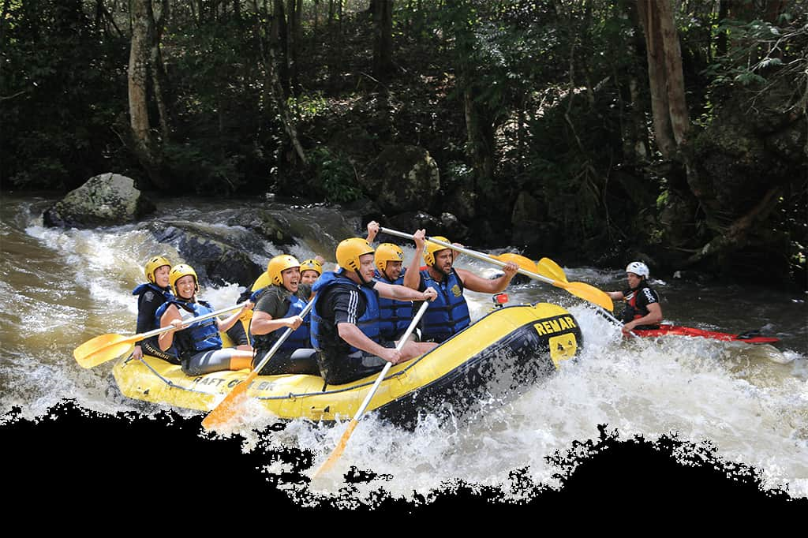

At The Sanyaolu’s, we exist to bring people closer—to nature, to each other, and to the thrill of adventure. Our mission is simple: create unforgettable rafting experiences where safety, fun, and respect for the river come first. We believe life is better on the water, where friendships deepen, fears fade, and moments turn into lifelong memories.
The Sanyaolu's Rafting
History
Sanyaolu was a man who lived for adventure and the freedom of the river. With nothing but a raft, a dream, and an unshakable belief in the power of nature, he started taking friends on wild rides through the rapids. What began as a small passion turned into something much bigger—a place where people could escape the noise, embrace adventure, and find connection in the flow of the water. Today, The Sanyaolu’s stands as a tribute to his vision, welcoming everyone to share in the magic of the river and create memories that last a lifetime.
Driven by a desire to share this magic with the world, Sanyaolu built a haven for adventurers and dreamers alike. Rustic cabins nestled along the riverbank offered a cozy retreat after a day on the water, and campfires crackled under star-filled skies as stories of triumph and discovery were shared. As the years passed, The Sanyaolu's became more than just a destination—it became a community. Families returned year after year, friendships were forged in the wild, and countless hearts found healing in the rhythm of the river. Sanyaolu's legacy lived on, carried by the current and etched into the smiles of those who visited
Adventure Awaits You